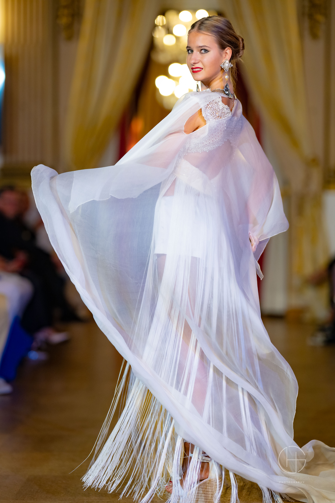
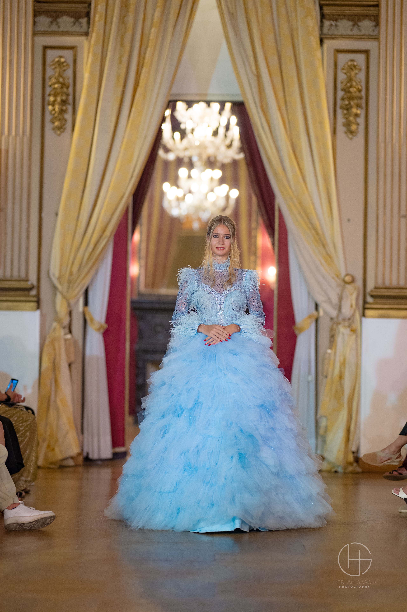
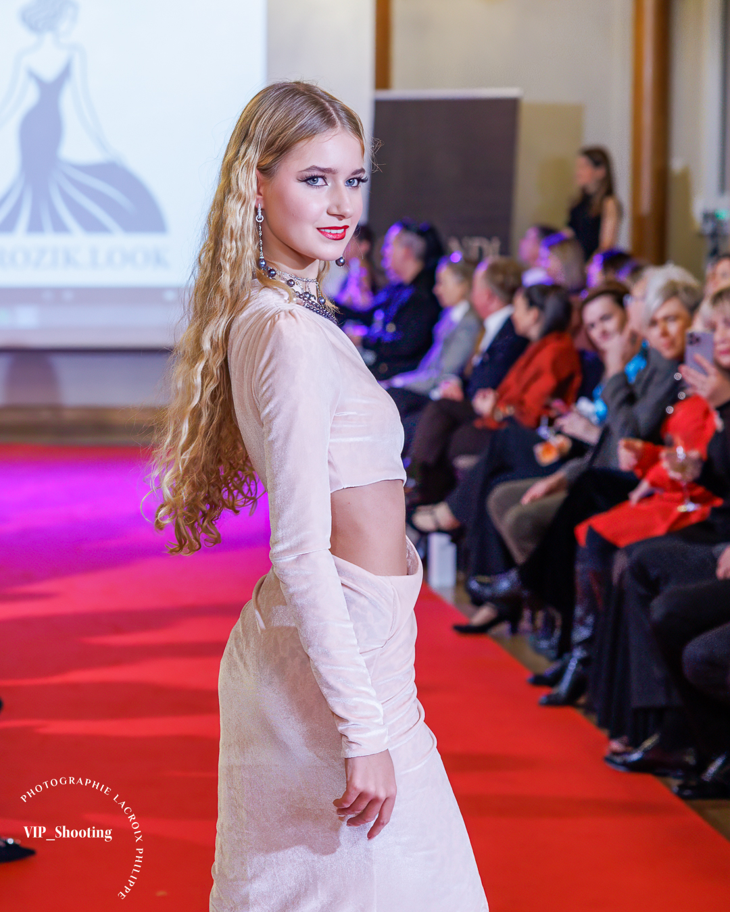
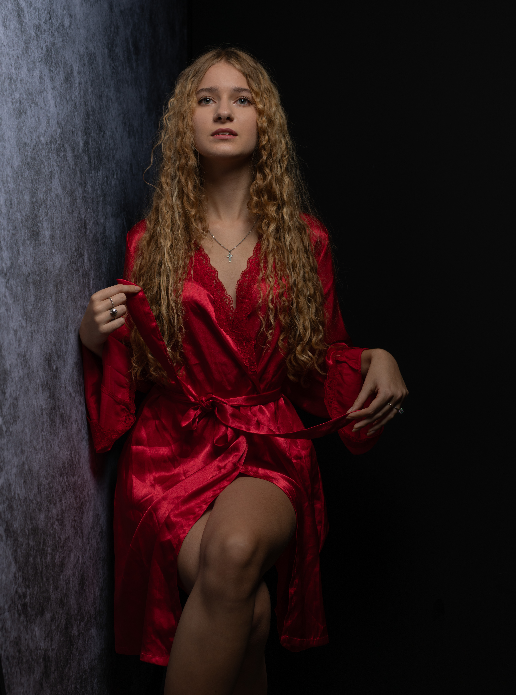

Welcome to my world!
IMS Student · Model · Dancer
About Me
Hi! My name is Daria Yakovchuk, and I'm currently studying at an Informatikmittelschule (IMS) in Switzerland. Besides IT, I'm interested in modeling, dancing, fashion and creative projects.
I created this website to introduce myself and to show my interests, experiences and future goals.

Modeling
Modeling is one of my biggest interests. I have experience with fashion runway shows in Milan, Rome, Cannes and of course Switzerland.



Dance
Dancing has been a big part of my life for many years. I especially enjoy Latin dance and I regularly train and take part in competitions.
Dance helps me develop discipline, confidence, musicality and stage presence.
IT & Projects
The Alte Kantonsschule Aarau was founded in 1802 and is one of the oldest non-church gymnasium in Switzerland. Albert Einstein studied here, as well as Nobel Prize winners Paul Karrer and Werner Arber.
A funny coincidence is that I was also born on 14 March, the same day as Albert Einstein. So I sometimes joke that I am “Albert 2.0” — just with a different direction in life.
This website is one of my first bigger projects. I created it with HTML, CSS and JavaScript and I continue to improve it step by step.
My first personal portfolio website.
HTML · CSS · JavaScriptI will add more school and personal IT projects here in the future.